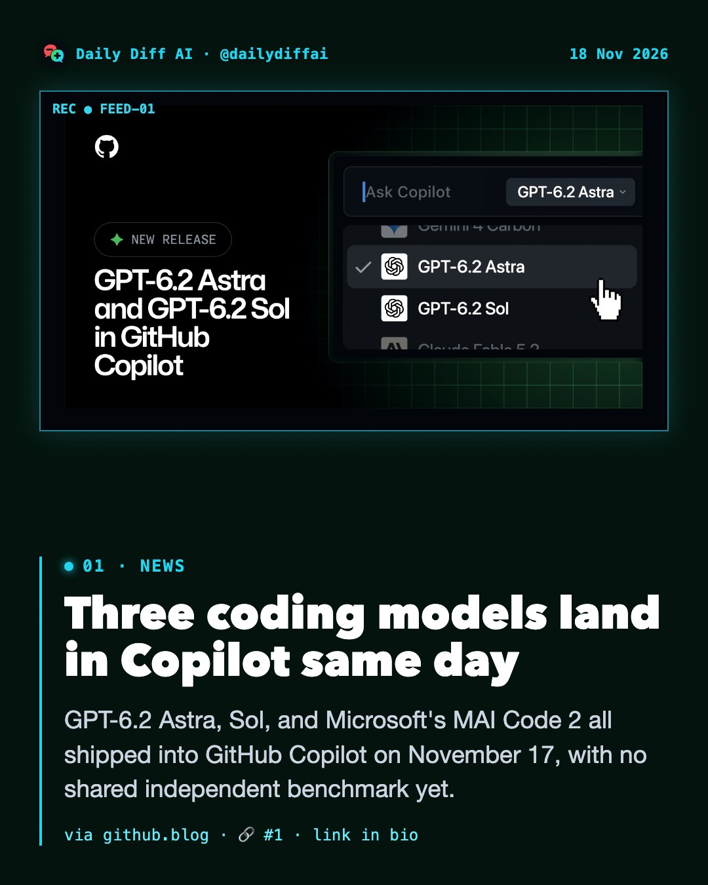
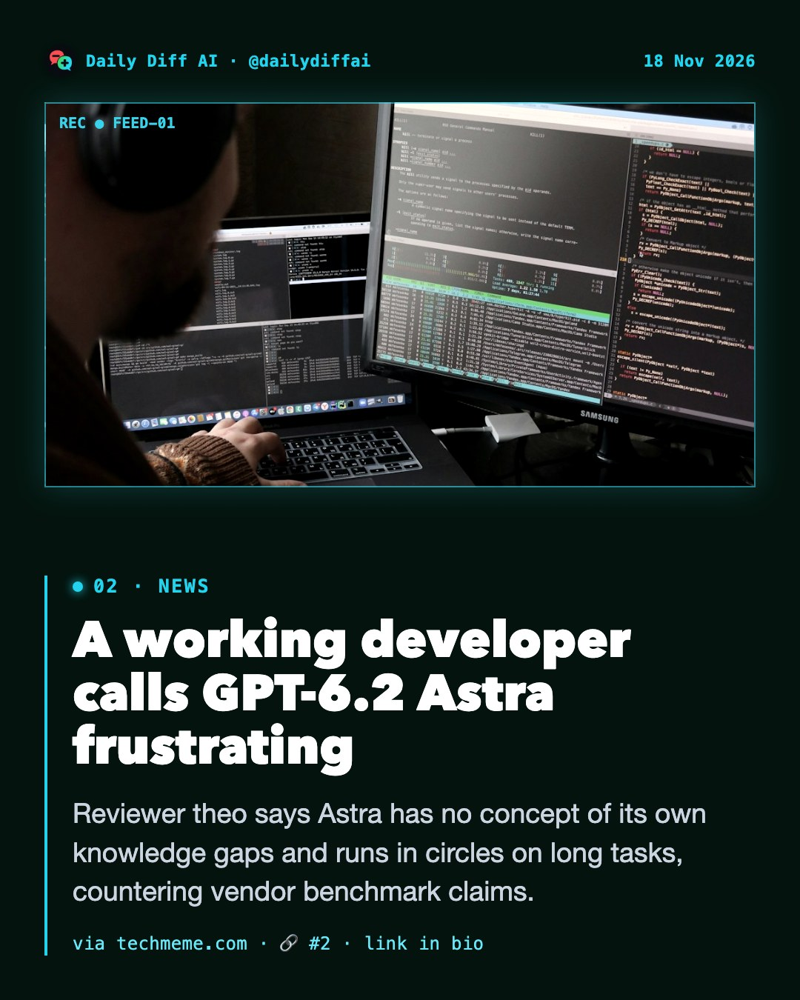
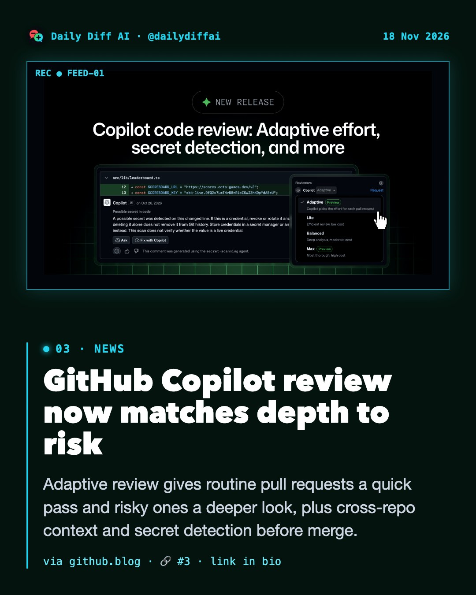
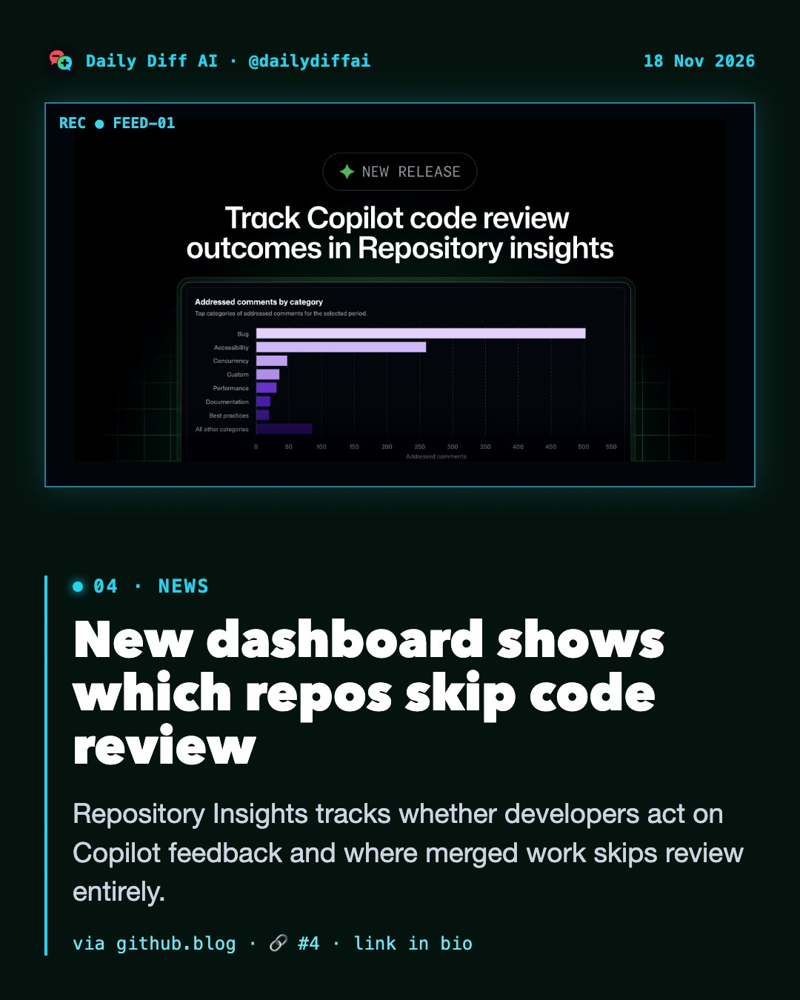
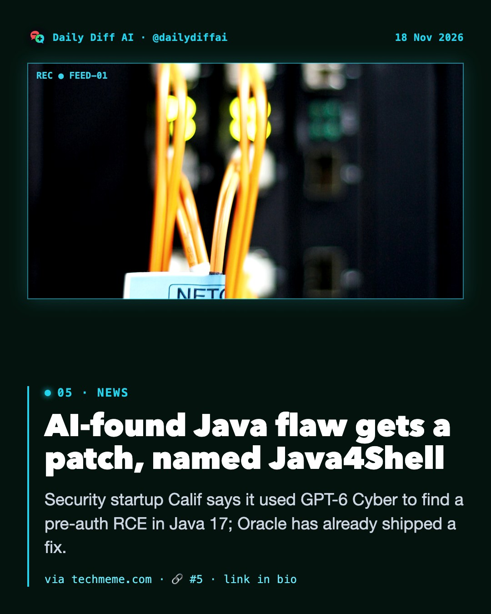
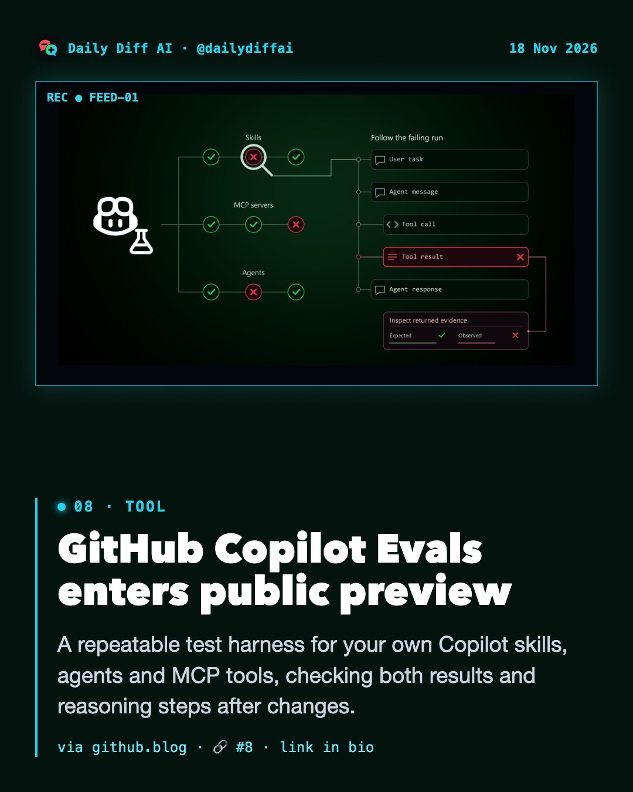

Daily Diff AI

Three coding models land in Copilot same day
GPT-6.2 Astra, Sol, and Microsoft's MAI Code 2 all shipped into GitHub Copilot on November 17, with no shared independent benchmark yet.
Read on github.blog →
A working developer calls GPT-6.2 Astra frustrating
Reviewer theo says Astra has no concept of its own knowledge gaps and runs in circles on long tasks, countering vendor benchmark claims.
Read on techmeme.com →
GitHub Copilot review now matches depth to risk
Adaptive review gives routine pull requests a quick pass and risky ones a deeper look, plus cross-repo context and secret detection before merge.
Read on github.blog →
New dashboard shows which repos skip code review
Repository Insights tracks whether developers act on Copilot feedback and where merged work skips review entirely.
Read on github.blog →
AI-found Java flaw gets a patch, named Java4Shell
Security startup Calif says it used GPT-6 Cyber to find a pre-auth RCE in Java 17; Oracle has already shipped a fix.
Read on techmeme.com →Microsoft outage root cause traced to Switzerland
A bug began in Switzerland and cascaded as failover shifted traffic, leaving over 80% of Exchange servers unresponsive worldwide.
Read on techmeme.com →How deterministic simulation testing catches agent races
Replace real clocks, networks and storage with simulated ones driven by one seed, so a failing run can be replayed exactly.

GitHub Copilot Evals enters public preview
A repeatable test harness for your own Copilot skills, agents and MCP tools, checking both results and reasoning steps after changes.
Read on github.blog →
Running agents without handing over your login
A Hacker News discussion on keeping coding agents away from full personal credentials drew wide attention this week.
Read on blog.antonio.cx →
Microsoft's MAI Code 2 targets cheaper agentic coding
Microsoft shipped MAI Code 2 and Flash into Copilot the same day as GPT-6.2, aimed at production debugging and multi-file work at lower cost.
Read on github.blog →